Yeni bir konuya yelken açma zamanı geldi, tek boyutlu eşlemeler (kitabımda 10’uncu bölüm). Bu teknik bize kaosu, şimdiye kadar ilgilendiğimiz Lorenz sisteminden daha az çetrefil olan bazı çatallaşmaları tarif etmekte daha basit bir yöntem sağlayacak. 1-D eşlemeler şu formda oluyorlar,
\[ x_n = f(x_n) \]
Burada \(n\) zamanla eşdeğer sayılabilir, ama sürekli değil ayrıksal (discrete). Yani bir süreliğine diferansiyel denklemler konusunu terkediyoruz, ve kaosun daha basit modelleri olan 1-d eşlemelere odaklanıyoruz.
1-d eşlemeler ve kaosun temel bilimle bağlantılarını da işlemek istiyorum, ama bu daha sonra. Dersimizde daha önce 1-d eşlemeleri gördük, mesela Lorenz sisteminden bahsederken dedik ki Lorenz baktı diferansiyel sisteminde kullandığı parametreler stabil limit çevrimlerine sebep olmuyor, o da Lorenz eşlemesi denebilecek bir sistemi kullandı, ve sonuç olarak bir tersine çevrilmiş V şekli elde etti, hatırlarsak bu grafiğin her noktasında eğim 1’den büyüktü ve biz bu bilgiyi hiçbir stabil nokta ya da o eşleme için stabil periyodik yörünge olamayacağı sonucuna varmak için kullandık, ve nihayetinde tüm bunlarla stabil limit çevrimi olmayacağına karar verdik. Ama argüman tam kitaba uygun da değildi, çünkü elimizde tam bir fonksiyon yoktu fakat şimdi göreceğimiz örnekte tek değişkenli geçerli bir fonksiyon incelenecek.
Bakacağımız fonksiyon lojistik eşleme (logistic map), bu fonksiyonun kendisi oldukça basit fakat yolaçtığı harikulade, çetrefil bazı fenomenler var.
\[ x_{n+1} = r x_n (1-x_n) \]
Görüldüğü gibi ifadenin daha önce gördüğümüz lojistik diferansiyel denklemle yakından alakası var. Grafiklesek şuna benzeyecektir,
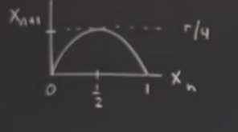
yani ters dönmüş bir parabol şekli, 0 ve 1’den geçiyor. Maksimum noktasının 1/2 noktasında olduğunu hesaplayabiliriz, ve \(1/2\) değerini \(x_n\)’e sokunca ona tekabül eden dikey eksendeki değerin \(r/4\) olduğunu buluruz.
Bu eşleme genellikle \(x_n \in [0,1]\), ve \(0 \le r \le 4\) arasında analiz edilir, eşleme özyineli tabii ki, 0,1 arasında girilen sayılar yine 0,1 arasına götürür bizi, ve döngü devam eder. Bu eşleme bu arada May adlı bilimcinin Nature dergisinde [1] işlediği konuydu. Makalenin yayınlandığı 1976 senesinde okuyucuların kaos kavramı hakkında bilgisi yoktu, ana akım bilimcileri konudan habersizdi. Üstteki formül kadar basit bir şeyi alıp hesap makinasında ardı ardına o özyineli hesabı yapıp ilginç bir şeyler elde etmek insanlara çok şaşırtıcı gelmişti.
May’in vurguladığı şuydu, “bakın bu formül gayrı-lineer, eşitliğin sağında bir \(x\) var, ve parantez içinde bir başka \(x\)’i çarpıyor, karesel bir gayrı-lineerlik var orada’‘, ve bu basit sistem üzerinden biz eğitmenlere de bir görev vermeye uğraşıyordu aynı zamanda, “bakın bu kadar basit bir formülasyon ile ne kadar karmaşık sonuçlar üretebiliyorsunuz’’ diyordu. Biz eğitmenleri uyandırmaya uğraşıyordu, çünkü eğitim sistemi yıllarca öğrencilere lineerlik öğretir, lineer cebir, Fourier analizi, Laplace transformları, normal mod’lar, tüm bunlar lineer yaklaşımlardır, ve öyle ya da böyle doğrusal bileştirme ilkesini (superposition principle) kullanırlar, ve bu eğitim öğrencilere, bilim hakkında yanlış bir sezgi kazandırmış olur, çünkü lineer sistemler fazla şey yapamazlar. Ve modele en basit gayrı-lineerligi eklediğiniz anda, üstteki formüldeki \(x^2\) gibi, müthiş beklenmedik sonuçlar ortaya çıkar. Bu 70’li yıllarda yaygın bir şekilde bilinmiyordu, May’in söylemeye çalıştığı üstteki gibi örnekleri derslerimizde kullanarak bu eksikliği gidermemiz gerektiğiydi. [1] yazısını okumanızı tavsiye ederim, yazıldığından 40 sene sonra bile hala eğlenceli, ilginç bir makale ve takip etmesi çok zor değil.
Evet, üstteki eşleme basit bir gayri-lineer eşleme. Hatta denebilir ki olabilecek en basit eşleme, değil mi? Yani, \(x^2\)’den daha basit hangi gayrı-lineerlik var? Sistemin ürettiklerine bakalım şimdi, \(r\)’yi sabitleyelim, bir başlangıç koşulu \(x_0\) seçelim, çıkanları zaman serisi olarak gösterelim. İlk hesap,
\[ x_1 = r x_0 (1-x_0) \]
Sonra \(x_1\)’i bir sonraki hesap icin kullanabiliriz.
\[ x_2 = r x_1 (1-x_1) \]
Böyle gider.. Eğer üretilen \(x\)’leri grafiklesek, diyelim \(r=0.5\) için,
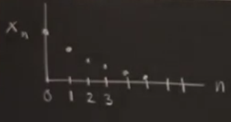
grafiği ortaya çıkar. Önceki derslerde yaptığım gibi gidiş yolları çizmedim dikkat edersek, çünkü burada zaman ayrıksal, birbirinden apayrı noktalar var, bazıları bu sebeple bu tür sistemlere “ayrıksal dinamik sistemler’’ diyor. Bilgisayarda hesaplayınca \(n \to \infty\) iken \(x_n \to\) olduğunu görüyoruz, tüm başlangıç \(x_0\) değerleri için bu oluyor.
Eğer \(r\)’yi arttırırsak, mesela \(r=2.8\) yaparsak, daha ilginç bir şey görürdük,
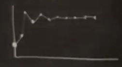
Noktaları birleştirdim, gerçi bu teorik olarak anlamsız çünkü noktalar arasında ek noktalar yok, neyse genel bir kalıbı görmek için iyi. Bu grafik daha iniş çıkışlı. Fakat bu durumda \(x_n \to x^\ast\), yani bir değere yaklaşım var, \(n\to\infty\) iken \(x^\ast\) adını vereceğimiz bir sabit noktaya yaklaşılıyor, ayrıca \(x^\ast\) başlangıç \(x_0\)’den bağımsız (sıfır ve bir haricinde, eğer ilk değer sıfır ise hep sıfırda kalınırdı, bir ise sonraki değer sıfır). Ama onun haricinde başlanılan her \(x_0\) değeri sonrasında sonuşurda \(x^\ast\)’e yaklaşma var.
Farklı bazı \(r\)’lere bakarsak, mesela \(r=3.3\)
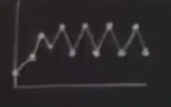
Sürekli bir dalgalanma var. Bir önceki durumda dalgalanma grafiğin başındaydı, başta denge noktası bayağı aşıldı, sonra ondan aşağı inildi, nihai olarak yaklaşım oldu ama bir dalgalanma sonrası. Sönümlü bir dalgalanma oldu yani. Üstteki gibi durumlara periyot 2 dönümlü / çevrimli deniyor (tutarlılık açısından önceki örneğe periyot 1 denebilir), \(x_n\) ve \(x_{n+2}\) birbirine eşit. Burada şimdiye kadar görmediğimiz farklı türden bir çekici (attractor) sanki. Gerçi ayrıksal zamanlı eşlemeleri (map) detaylı zaten işlemedik ama burada olanlar sürekli durumdaki limit çevriminin ayrıksal karşılığı, periyodik bir davranışa yaklaşım var.
\(r=3.5\) ile periyot 4 görürdük,
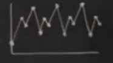
Dikkat edersek 1 periyottan 2’ye oradan 4’e gittik, görünüşe göre periyot katlanarak artıyor, ki “periyot katlanması (period doubling)’’ terimi bu görülen fenomenin tarif etmek için kullanılır, \(r\) arttıkça bu katlanma görülür, artış belli \(r\) noktalarında olur, ve artış devam eder, 2’nin herhangi bir katına kadar, 2. milyonuncu katında da bir periyodik yörünge görülecektir.
Soru
Periyotun ikiye katlanmasının sebebi denklemdeki üstelin iki olması mı?
Cevap
Dolaylı olarak evet, ama illa üst iki olduğu için ikiye katlanma var diyemeyiz, sebep eşlenme grafiğinin tepe içermesi, yani tepe şekli veren diğer eşlenmelerde de katlanma olabilir.
Kendimize sorabiliriz, periyot \(2^n\) ile \(2^{n+1}\) arasında çatallaşma hangi noktada, hangi \(r\) değerleri için olur? Robert May bu konuyu [1]’de detaylı olarak araştırdı. \(r_n\) stabil \(2^n\) çevrimin ilk ortaya çıktığı nokta olsun. Bilgisayarda görürdük ki
\(r_1 = 3\), periyot 2 doğuyor
\(r_2 = 3.449..\), periyot 4
\(r_3 = 3.54409..\), periyot 8
\(r_4 = 3.5644..\), periyot 16
\(r_5 = 3.568759..\), periyot 32
Bir kalıp görmeye başladık zannederim, \(r\) değerleri bir şeye yaklaşıyor, 3.57 civarında, ve bu doğru, \(r\)’de yakınsama var. Limit’te
\(r_\infty = 3.569946..\)
Bu \(r\) değerlerini nasıl buluruz? Bilgisayar kullanarak, \(r\)’leri yavaş yavaş arttırırken arttırım öncesi ve sonrası ne olduğuna bakarız. Bu \(r\)’lerden bazılarını analitik olarak açıklamak mümkün, mesela bu örnekte \(r_1,r_2\) belki \(r_3\). Ama daha yukarıdaki değerler analitik hesap neredeyse imkansız, sebep polinomları analitik çözebilmek ile alakalı, 5. derece ve üstü polinomları analitik olarak köklerini bulmak mümkün değil.
Bazılarının aklına şu gelebilir, niye periyot 3, 5, yok, hep 2’nin üstünü görüyoruz? Cevap bu problemde başka türlü periyotlar da mevcut aslında, 3.56 sonrası 4’e kadar yol var, o aralıkta bir sürü ilginç şeyler oluyor, hatta en ilginç şeyler o aralıkta oluyor. Bazılarının aklına gelen bu soru, temel bilimle alakalı bazen, mesela türbülansı anlama bağlamında. Türbülans çözülmesi en zor bilimsel problemlerden biri bildiğimiz gibi, bilimciler düşündü ki üstteki gibi bir problem tanımı belki türbülansı anlamak için yardımcı olabilir, çünkü burada periyot katlanıyor, bir süre sonra herşey karmaşıklaşıyor, türbülansta da öyle, başta su dümdüz akıyor, su hızını arttırınca dalgalanmalar görünüyor, başta ritmik / periyotsal. sonra hızı daha da arttırınca kaos. Bilimciler evet özyineli eşlemeleri türbülans için kullandı buldukları tam çözümde yardım etti denemez, ama ek bazı anlayış geliştirmekte faydalı oldu. İlerideki derslerde o bulguları göreceğiz.
Eşlememize ve \(r\)’lere dönersek, acaba \(r\)’lerin yakınsama oranı nedir? Bu soruyu sormak mantıklı mı? Elimizde bir geometrik seri mi var? Ne var?
Yakınsama büyük oranda geometriksel evet, bu 60’li yıllardan beri biliniyor aslında. Büyük oranda dedim, çünkü seri harfiyen geometrik değil, sonuşurda, \(r_\infty\) yakınında geometrik. Eğer \(r\)’leri ardı ardına grafikte göstersem \(r_\infty\) yakınında değerler birbirine iyice yaklaşmaya başlıyor.
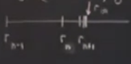
O zaman analiz için birbirini takip eden iki \(r\) arasındaki boşluğa bakmak, ve ardı ardına gelen iki boşluğu karşılaştırmak faydalı olabilir. Acaba bu iki boşluğun oranı nedir? \(n\to\infty\) iken o bölümün bir değere yaklaştığını görebilirdik,
\[ \frac{r_n-r_{n-1}}{r_{n+1}-r_n} \to 4.6692 \]
Kabaca söylemek gerekirse her boşluk bir öncekinden 4-5 kat daha dar. Bu oran kaos alanında önemli bir sayı haline geldi bu arada, ona \(\delta\) diyelim, konunun tarihsel olarak geldiği şu anda pek bir anlamı yoktu, 60’lı yıllarda da öyle düşünüldü, ama sonradan yapılan araştırmalar sonrasında bu sayı süperstar haline geldi, aynen geometride \(\pi\) sayısının olduğu gibi kaos için bir afiş, sembole dönüştü.
May üstteki sayıyı [1]‘e koymadı, o zaman önemli görmedi, ama okulda dersi öğretirken (ki hikayenin bu kısmı Gleick’in kitabı [2]’den geliyor) benim gösterdiğim gibi \(r\)’leri yazmış sonra ders sonunda tahtaya öğrencilere üzerinde düşünmeleri için şunu yazmış “\(r_\infty\) sonrası ne halt oluyor?’’. :) Ben May’i tanıyorum, Avustralyalı, biraz çılgındır, sporcudur, her türlü oyunu oynamayı sever, tennis, ping-pong. Gerçi ben teniste ondan daha iyiymişim öyle anlaşıldı [gülüyor]. Bir de Avustralyalı’lar İngiltere’nin mahkumlarını gönderdiği yermiş, herkesin atası kanun dışı bir karakter, kendileri değil tabii ama kendilerine öyle bir bakışları var. İşte May tahtaya böyle bir şey yazmış. O yönde ne May ne öğrencileri fazla düşünce sarfetmemişler, ama Frank Hoppenstedt adında başka bir matematiksel biyolog düşündü. Hoppenstedt bilgisayarda bir grafik çizdi ve bu grafik kaos alanında ikonik figürlerden biri haline geldi.
Grafiği çizmek için \(r\)’ler ve onların ortaya çıkarttığı çekicileri gösteriyoruz, y ekseninde \(x_n\) değerleri var, ama bu değerler uzun vadede yaklaşılan değerler. Başta \(r=0.5\) tek bir basit çekici, sonra \(r=3\)’te bir çekici daha, ondan sonra periyot katlaması, mesela \(r=3.3\)’te iki nokta arasında \(x_n\) bağlamında gidip geliniyor [hoca aslında iki üstteki 3.5 durumunu tarif ediyor]. En son gelinen dört nokta arasında iki üstteki 3.5 grafiğine göre ziyaret olurdu [sırayı yeşil ile işaretledik].
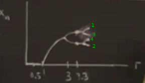
Kabaca bir resim bu tabii, neyse, çatallaşmalar devam ediyor ve \(r_\infty\)’da bir limit’e yaklaşıyorlar, orada resim iyice karmaşıklaşıyor, çatallaşma üstüne çatallaşma.. buralarda fraktalların ortaya çıktığını hissediyorsunuz. May’in sorusuna dönersek, \(r_\infty\) sonrası ne oluyor? Düşünülebilir ki orada çatallaşma çorbası daha da karmaşık hale gelecek, ama böyle olmuyor.
Olanlar karmaşık ve nüanslı bir düzen içinde. Size biraz önce bir yörünge diyagramı verdim, bu diyagramlar için bir \(r\) seçilir, bir program yazıyormuş gibi düşünelim, bir döngü içindeyiz ve döngüde \(r\) değişiyor, bir \(r\) seçiyoruz, dönüyoruz, bunu 10,000 kez yapıyoruz diyelim, baştaki \(r\)’leri yok sayıyoruz çünkü orası geçici bir bölge, milyon kere dönsek ilk 1000 taneyi atlıyoruz mesela.. ve takip eden tüm \(r\)’leri grafikliyoruz. Bunu yapmayı bitirdiğimizde bu yörünge diyagramını elde ediyoruz. Diyagramı elle çizmem mümkün değil [altta programla grafikledik], ama gördüğümüz diyagramın sağ kısmında boş beyaz şeritlerin ortaya çıktığı.. diğer yerlerde bir sürü karmaşa.. boş beyaz serietler periyodik pencereler, ve onlara yakında bakarsak aslında içlerinin tamamen boş olmadığını görüyoruz. Orada da bir şeyler oluyor. Bu pencerelerden en genişi periyot 3 penceresi, \(r=3.8\) etrafında ortaya çıkıyor.
import numpy as np
import matplotlib.pyplot as plt
def logistic_func(r,x):
return r*x*(1-x)
def xnext(r,xo,N):
no = 0
X = np.zeros(r.size*N)
A = np.zeros(r.size*N)
for r_value in r:
xinit = xo
for i in range(200):
xinit = logistic_func(r_value,xinit)
X[no] = xinit
A[no] = r_value
no += 1
for j in range(1,N):
X[no] = logistic_func(r_value,X[no-1])
A[no]= r_value
no += 1
return A, X
xo = .4
Num = 71
r_min = 2.899
r_max = 3.999
total_of_r = 1700
r = np.linspace(r_min,r_max,total_of_r)
A, X = xnext(r,xo,Num)
fig, ax = plt.subplots(figsize=(12,8))
ax.plot(A,X,".",markersize=0.1,color="green")
ax.set_xlim(r_min,r_max)
ax.set_ylim(0,1)
ax.set_title(r'Catallasma Diyagrami: $Y_{sonraki} = Y_{onceki}*r*(1-Y_{onceki})$')
ax.set_xlabel('r')
ax.set_ylabel(r'$Y[r,Y_{onceki}]$')
plt.gca().set_aspect('equal', adjustable='box')
plt.savefig('19_08.png')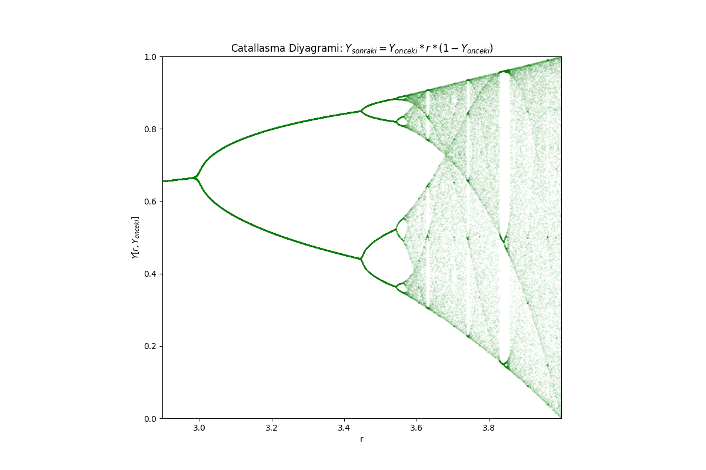
Bu arada periyot 3’ün nerede çıktığını hesaplayabiliyoruz, \(1+2\sqrt{2}\)’da.
Eğer periyot 3 penceresine bakarsak orada da çatallaşma diyagramının bir ufak kopyasını görüyoruz [üstteki diagramda gözükmüyor ama var], bakabilsek şöyle bir şey görürdük,
ki en sağında onun da periyot 3 boşluğu var, vs. Böyle devam ediyor. Yapı içinde yapı durumu, ve bu durum sadece periyot 3 penceresi için değil, her pencere için geçerli. Her pencere içinde o pencerenin içinde olduğu daha büyük diyagramın bir kopyası var.
Ayrıca bu örnek üzerinde gördüğümüz pek çok şey lojistik eşlemeye has değil. İleriki derslerde “evrensellik’’ konusunu işleyeceğiz, göreceğiz ki bu ufak örnek üzerinde gördüklerimiz çok daha geniş eşleme kategorisinin evrensel özelliği, hatta çok daha geniş dinamik sistemlerin evrensel özelliği, ki bu sistemlere sadece ayrıksal değil sürekli diferansiyel denklemler, kısmi diferansiyel denklemler de dahil. Bu evrensellik öyle ki labaratuar şartlarında yapılan deneylerin vereceği sonuçları tahmin ediyor. Bu ufak örnek koca bir bilimsel hikayenin başlangıç noktası, ve kaosun niye bu kadar popüler hale geldiğinin bir diğer sebebi.
Özellikle üstteki gördüğümüz kavramlar ile deneysel olarak doğrunabilen tahminlerin yapılabilmesi ilk bulunduğunda hayret verici idi, büyük bir olaydı, çünkü, yani üstteki ufak modelin temel bilimle hiçbir alakası yok. Hesap makinasında düğmeye arka arkaya basıyoruz, başka bir şey yapmıyoruz değil mi? Fakat bakıyoruz ki o basit işlemin sonucu gerçek dünyada labaratuar şartlarında yapılan basit hesapla alakasız olan deney sonuçlarını tahmin ediyor. Çok ileri atlamış olmayayım, burada durayım, ama gidişatımız bu yöne doğru.
Lorenz’den ilham alarak burada kadar anlattıklarımı matematiksel olarak türetmeye çalışacağım şimdi. O da çetrefil bir sistem kurmuştu sonra onu matematiksel olarak, elindeki araçlarla analiz etmeye uğraşmıştı. O zaman elindeki araçlar fazla değildi, bazı basit şeyleri açıklayabildi sadece, o sebeple yeni araçlar keşfetmesi gerekti. Bu problem için de durum böyleydi. Önce basit olasılıklarla başlayalım. İlk birkaç \(r_n\)’i türetmeye uğraşalım.
\[ x_{n+1} = r x_n (1-x_n) \]
\(x^\ast=0\) her \(r\) için bir sabit nokta. Stabil mi? \(x^\ast=0\) yakınında karesel terimi yok sayarsak, denklem \(x_{n+1} = r x_n\) gibi davranır. Bu formül üstel büyüyüş demektir, \(x_1=rx_0\), \(x_2=r^2x_0\), …\(x_n=r^n x_0\) olur, o zaman \(r>1\) ise sıfırdan kaçış olur, \(r<1\) ise sıfıra gidiş olur. Demek ki eğer \(r<1\) ise \(x^\ast=0\) lineer olarak stabildir.
Bu noktaya daha önce Lorenz eşlemelerinde sabit noktaların stabilliğini işlerken gördüğümüz fikri kullanarak ta erişebilirdik, dedik ki lineerleştirme yapınca \(x^\ast\)’in stabilitesi \(|f'(x^\ast)|\)’e bağlıdır, eğer \(|f'| < 1\) ise lineer stabilite vardır. Hatırladık mı? Lorenz eşlemesinde bu sebeple hiçbir yerde stabilite yoktu çünkü eşlemenin her noktasında \(|f'| > 1\) idi. Bu problem için
\[ f(x) = r x (1-x) = rx - rx^2\]
\[ f'(x) = r - 2rx\]
\[ f'(0) = r\]
O zaman \(x^\ast=-0\) eğer \(|r|<1\) ise lineer olarak stabil, \(r\)’leri hep pozitif seçtiğimiz için \(0 < r <1\) diyebiliriz.
Şimdi ilk çatallaşan sabit noktaya bakalım, bu hesabı basit olan diğer sabit nokta, basit olmayan sabit nokta \(f(x^\ast) = x^\ast\) ile bulunur (eşlemelerde sabit nokta böyle bulunur, değişimin bittiği yeri bulmuş oluruz yani), devam edelim,
\[ f(x^\ast) = x^\ast = rx^\ast(1-x^\ast)\]
Ya \(x^\ast=0\) (basit) ya da \(1=r(1-x^\ast)\) o zaman \(x^\ast = 1-\frac{1}{r}\).
\(f'\) hesabı,
\[ f'(x^\ast) = r-2r \left(1-\frac{1}{r} \right) = 2-r\]
Mutlak değeri ne zaman 1’den küçük?
\[ | 2-r | < 1 <=> 1 < r < 3 \]
İşte bu sebeple 1 ile 3 arasında stabil bir dal var (üç üstteki resim).
Stabillik kaybolduğu zaman ne olur? Bu aralıkların uç noktalarında mesela. \(r=3\)’te ne olur ona bakalım. Gerçi ondan önce grafiksel olarak ne oluyor buna bakalım, bu lineerizasyon düşünce çizgisinde ilerlemeden önce grafiklere göz atsak iyi olacak. Ufak bir \(r\) için lojistik eşleme grafiği şuna benzer,
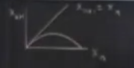
Bu grafiklerde 45 derece yatay çizgiyi hep çizmek iyi oluyor, çünkü orada \(x_{n+1} = x_n\), yatay çizgi eğriyi kesiyorsa orada sabit noktalar ortaya çıktığını gördük. Üstteki durum \(r<1\) için, yegane sabit nokta orijinde.
Sıfır yakınındaki dinamik nedir? Daha önce demiştim ki \(r<1\) için sıfır lineer olarak stabildir, ama bu örümcek ağı diyagramına bakınca sıfırın global olarak stabil olduğunu görüyoruz. Yani hangi \(x\)’ten başlarsak başlayalım, yukarı, sola, aşağı, vs. giderek muhakkak sıfıra iniyoruz.
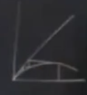
\(r>1\) olunca grafik şuna benzer,
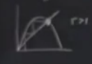
Peki \(r=3\),
\[ f'(x^\ast) = 2-r = -1 \]
Kesişme noktasındaki teğetin eğimi -1. Değil mi?
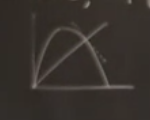
\(f'(x^\ast)=-1\)’in anlamı budur. Şimdi -1 eğime yakın olan bir yerdeki örümcek ağı diyagramının neye benzediğini hayal etmeye çalışalım.
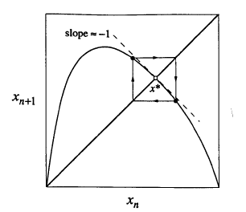
Sabit noktaya yakın bir yerden başlayınca ne olur? -1 eğim olduğu durumda bir kare etrafında dönüp dururuz. Bu periyot 2 demektir ve karenin sol üst ve sağ alt köşesindeki noktalar arasında gidip gelmek demektir. O zaman periyot katlanmanın ortaya çıktığı şartlar nedir sorusunun cevabı yatay çizginin eğriyi kestiği noktadaki teğetin eğiminin -1 olması cevabı verilebilir. \(f'(x^\ast)=-1\) olduğu zaman yani, ve ortaya çıkan çatallaşmaya bazıları çevirmeli (flip) çatallaşma olduğunu söyler. Ayrıca -1 değerine özdeğer ismi de veriliyor, bazen çarpan deniyor, çünkü Lorenz sisteminde de gördüğümüz gibi sabit noktadan sapmalar \(\eta_{n+1} = f'(x^\ast)\eta_n\) formülünü takip eder, bu bir lineer formül, sabit nokta etrafında lineerize ettik, ve -1 çarpımı o sapmanın bir önceki sapmanın negatifi olduğu söyler. \(r=3\)’te bunlar oluyor.
Bu mantığı takip edersek, bir sonraki periyot katlanmasını tahmin etmem mümkün. \(r=3\)’te ilk katlanmanın olduğunu gösterdik, ya periyot 4’un nerede olduğunu bulmak istiyorsak? Ama ondan önce ilk iki sabit noktadan sonra ortaya çıkan iki dalın formülünü hesaplayabilir miyim?
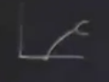
Dalın ucundaki iki noktaya \(p\) ve \(q\) dersem, onların bir özelliğinin ne olduğunu biliyorum,
\[ f(p) = q\]
\[ f(q) = p\]
Yani her nokta diğerine eşleniyor. Periyot 2 olmak bu demek. Bu duruma bir diğer bakış açısı
\[ f(f(p)) = p\]
olacak demektir. Lorenz eşlemesini işlerken bu vurguyu yapmıştım, bir periyot 2 noktası bulun, ki \(p,q\) böyle, ve o zaman diyebiliriz ki her periyot 2 noktası \(f(f(..))\) eşlemesinin bir sabit noktası. Yani eğer içiçe iki \(f\)’i tek bir fonksiyon / eşleme gibi görürsek, \(f^2(p) = p\) olduğu için o eşlemenin sabit noktası \(p\)’dir diyebiliriz (aynı şekilde \(q\)). Bu bakış açısı daha faydalı çünkü sabit noktaların hesabı çevrimlerin hesabından daha kolay. Denklemsel olarak
\[ f(f(p)) = r f(p) \left[ 1- f(p) \right] \]
\[ = r \left( rp (1-p) \right) \left[ 1-rp(1-p)\right] \qquad (1)\]
elde ederdim, eşitliğin sağ tarafında \(p\)’nin 4 kuvveti ortaya çıkıyor, bu şaşırtıcı değil lojistik denklem karesel, o zaman içiçe iki \(f\) üstel 4 olur.
\(f(f(p))\)’yi grafikleyebiliriz,
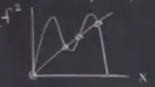
Yatay çizginin grafiği dört noktada kestiğini görüyoruz. Farklı bir \(r\) için alttaki gibi bir grafik de elde edebilirdim,
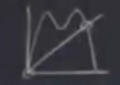
İki üstteki grafikteki orijin hala sabit nokta, çünkü \(f(f(0))\) yine sıfır verecek. Ama bu noktaya tam periyot 2 denemez. Ayrıca dört üstteki kareli durumda ortaya çıkan iki nokta da periyot 2 gibi gözüküyorlar, gerçek sabit nokta alttaki, sabit noktanın solundaki \(p\) sağındaki \(q\).
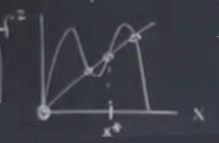
Şimdi cebirsel olarak (1)’i \(p\)’ye eşitlersem sabit noktayı cebirsel olarak bulabilirim. Zannedilebilir ki üstel 4 denklemin köklerini bulmam lazım ki bu kolay değil ama aslında elimizde basitleştirici bazı silahlar var, çünkü sıfırın bir kök olduğunu biliyorum, ve basit sabit nokta \(x^\ast = 1-\frac{1}{r}\)’yi biliyorum. Bu kökleri dışarı çekersem, geri kalan karesel formüldür, onu çözmek daha kolay.
Bunu yapınca \(r_2 = 1+\sqrt{6}\) çıkıyor, ki bu daha önce gördüğümüz 3.449.. sayısı.
Bu \(r\) analitik olarak hesaplanabilen son \(r\).
Mandelbrot, Fraktallar
Bu alanda Mandelbrot kümesi bahsini duyariz [3]. Bu tür kümeler bir özyineleme üzerinden hesaplanır ve bu döngü bir eşleme / fonksiyon olarak görülebilir, bir onceki bir sonrakini etkiler. Mandelbrot kümeleri en basit baz fonksiyonları kullanır, mesela \(f(x) = x^2 + c\) ki \(c\) bir sabit sayıdır.
Kaynaklarda görülen fraktal resimler şöyle üretilir; sabit \(c\)’nin kompleks sayı olmasına izin verilir, ve bir \(x,y\) kordinatındaki, izgaradaki her \(x,y\) farklı bir sabittir, \(c = x + y i\). Tüm bu sabitler üzerinde Mandelbrot özyineli hesabı ayrı ayrı işletilir. O zaman \(x\) ve \(y\) için \([-2,+2]\) arasında 5 tane ızgara değeri olsa, şöyle bir matris ortaya çıkar,
\[ \left[\begin{array}{ccccc} -2+2i & -1+2i & 2i & 1+2i & 2+2i \\ -2+i & -1+i & i & 1+i & 2+i \\ -2 & -1 & 0 & 1 & 2 \\ -2-i & -1-i & -i & 1-i & 2-i \\ -2-2i & -1-2i & -2i & 1-2i & 2-2i \end{array}\right] \]
Bu matrisin her hücresi üzerinde belli sayıda özyineleme yapılır, arada eğer bir eşik değeri geçildiyse o değer sıfır yapılır, döngü bitince matris bir Mandelbrot fraktalı ortaya çıkartmıştır.
m = 480
n = 320
x = np.linspace(-2, 1, num=m).reshape((1, m))
y = np.linspace(-1, 1, num=n).reshape((n, 1))
C = np.tile(x, (n, 1)) + 1j * np.tile(y, (1, m))
Z = np.zeros((n, m), dtype=complex)
M = np.full((n, m), True, dtype=bool)
for i in range(100):
Z[M] = Z[M] * Z[M] + C[M]
M[np.abs(Z) > 2] = 0
plt.imshow(M,origin='lower')
plt.savefig("mandel.png")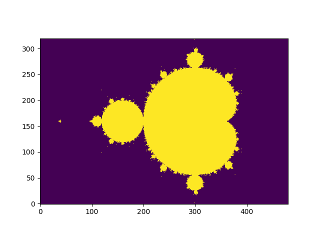
Kaynaklar
[1] May, Simple mathematical models with very complicated dynamics, Nature, 1976, Vol 261, pg. 459
[2] Gleick, Chaos: Making a New Science
[3] Roelandts, How to Compute the Mandelbrot Set using NumPy Array Operations, https://tomroelandts.com/articles/how-to-compute-the-mandelbrot-set-using-numpy-array-operations